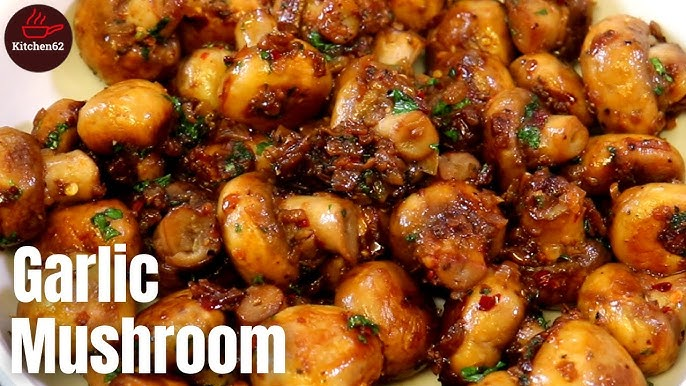

<!--#set var="TITLE" value="Garlic Mushroom - Pesce Mignon" -->
<!--#set var="STYLE_PATH" value="../style.css" -->
<!--#set var="HOME_LINK" value=".." -->
<!--#set var="SCRIPT_PATH" value="../" -->
<!--#include virtual="../includes/head.html" -->
<body>
    <!--#include virtual="../includes/header.html" -->
    
    <main>
        <article class="content">
            <h2><span class="en-text">Garlic Mushroom</span><span class="fr-text">Champignons à l'ail</span></h2>
            <p class="meta"><a href="https://www.youtube.com/watch?v=cvaibAcAFvE"><span class="en-text">Source</span><span class="fr-text">Source</span></a> &mdash; <time datetime="2024-02-17">Feb 17, 2024</time></p>
            
            <figure>
                
            </figure>
            
            <h3><span class="en-text">Ingredients</span><span class="fr-text">Ingrédients</span></h3>
            <ul>
                <li><span class="en-text">mushroom</span><span class="fr-text">champignons</span></li>
                <li><span class="en-text">butter</span><span class="fr-text">beurre</span></li>
                <li><span class="en-text">onion</span><span class="fr-text">oignon</span></li>
                <li><span class="en-text">parsley</span><span class="fr-text">persil</span></li>
                <li><span class="en-text">thyme</span><span class="fr-text">thym</span></li>
                <li><span class="en-text">garlic</span><span class="fr-text">ail</span></li>
                <li><span class="en-text">white wine</span><span class="fr-text">vin blanc</span> (<span class="en-text">optional</span><span class="fr-text">optionnel</span>)</li>
            </ul>
            
            <h3><span class="en-text">Steps</span><span class="fr-text">Étapes</span></h3>
            <ol>
                <li><span class="en-text">Melt the butter in the pan</span><span class="fr-text">Faire fondre le beurre dans la poêle</span></li>
                <li><span class="en-text">Add onion</span><span class="fr-text">Ajouter les oignons</span></li>
                <li><span class="en-text">Add mushrooms and stir</span><span class="fr-text">Ajouter les champignons et remuer</span></li>
                <li><span class="en-text">Add white wine to deglase</span><span class="fr-text">Ajouter du vin blanc pour déglacer</span> (<span class="en-text">optional</span><span class="fr-text">optionnel</span>)</li>
                <li><span class="en-text">Add thyme and parsley</span><span class="fr-text">Ajouter le thym et le persil</span></li>
                <li><span class="en-text">Add the garlic</span><span class="fr-text">Ajouter l'ail</span></li>
                <li><span class="en-text">Finish with pepper and salt</span><span class="fr-text">Terminer avec poivre et sel</span></li>
            </ol>
            
            <p class="tags"><a href="../recipes/">#recipe</a></p>
        </article>
    </main>
    
    <!--#include virtual="../includes/footer.html" -->
</body>
</html>
